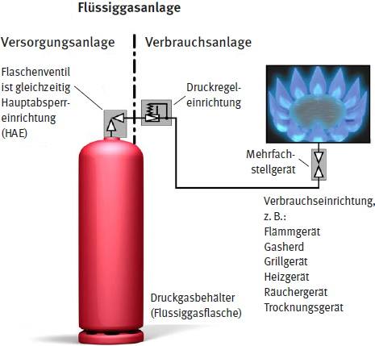
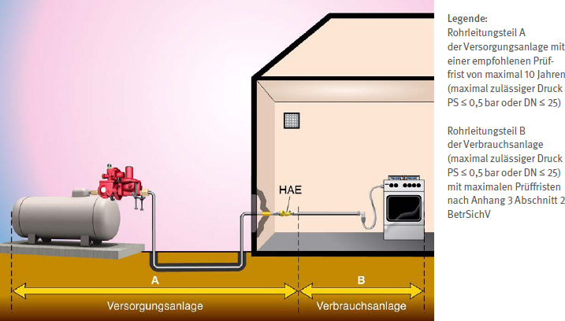
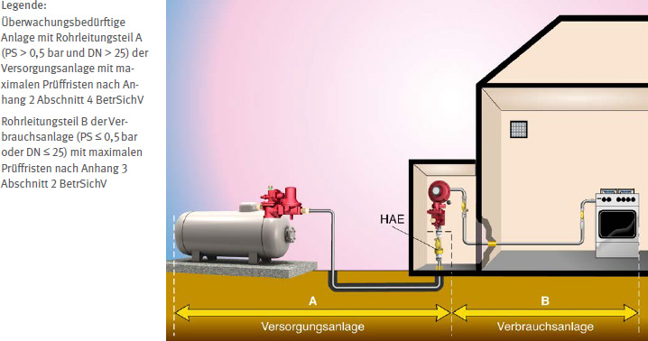

Flüssiggasanlagen sind vor ihrer erstmaligen Inbetriebnahme, vor Wiederinbetriebnahme nach prüfpflichtigen Änderungen und wiederkehrend zu prüfen.
Durch die Prüfungen sollen Beschädigungen sowie Mängel an der Flüssiggasanlage rechtzeitig erkannt und behoben werden. Dadurch wird das Risiko eines unbeabsichtigten Gasaustrittes aus der Flüssiggasanlage und damit verbundene Gefährdungen, z. B. durch Brand und Explosion, minimiert. Die Prüfungen tragen somit zu einem sicheren Betrieb der Anlage bei.
Die Unternehmerin oder der Unternehmer hat Art und Umfang erforderlicher Prüfungen von Flüssiggasanlagen nach Abschnitt 2 § 14 sowie Abschnitt 3 §§ 15 und 16 der BetrSichV festzulegen. Die Fristen für die wiederkehrenden Prüfungen sind nach den § 14 und § 16 BetrSichV in einer Gefährdungsbeurteilung zu ermitteln und festzulegen. Die BetrSichV enthält für Flüssiggasanlagen zu beachtende Vorgaben für Prüfungen im Anhang 3 Abschnitt 2 (Flüssiggasanlagen), im Anhang 2 Abschnitt 4 (Druckanlagen) sowie im Anhang 2 Abschnitt 3 (Explosionsgefährdungen).
Konkret regelt der Anhang 3 Abschnitt 2 BetrSichV die Prüfung der Aufstellung von Versorgungs- und Verbrauchsanlagen sowie die Prüfungen der sicheren Installation, Dichtheit (inklusive der Verbindungsstelle zur Versorgungsanlage) und sicheren Funktion der Verbrauchsanlage.
Sind überwachungsbedürftige Druckanlagenteile Bestandteil der Flüssiggasanlage, so sind die Prüfungen der überwachungsbedürftigen Druckanlagenteile entsprechend Anhang 2 Abschnitt 4 BetrSichV durchzuführen.
Überwachungsbedürftige Druckanlagenteile entsprechend Anhang 2 Abschnitt 4 BetrSichV für Flüssiggas sind z. B.:
Unabhängig davon, ob Bestandteile der Flüssiggasanlage überwachungsbedürftig sind oder nicht, ist die Prüfung der Aufstellung der Flüssiggasanlage nach Anhang 3 Abschnitt 2 BetrSichV durchzuführen.
Die Prüfungen von Flüssiggasflaschen gemäß der Richtlinie 2010/35/EU werden durch Verweis in der BetrSichV im ADR-Recht (Übereinkommen über die internationale Beförderung gefährlicher Güter auf der Straße) geregelt.
Zur Prüfung werden die Flüssiggasflaschen an den Gaslieferanten zurückgeliefert. Aus Flüssiggasflaschen, deren Prüffrist abgelaufen ist, darf weiterhin Flüssiggas entnommen werden. Die Verwendung von Flüssiggas aus noch nicht entleerten Flüssiggasflaschen mit abgelaufener Prüffrist ist in der Regel ohne Qualitätsminderung möglich. Die Zeit des Weiterbetriebes zur Entnahme ist durch die BetrSichV nicht genau begrenzt. Der Unternehmer/die Unternehmerin hat aber den zulässigen Zeitraum in der Gefährdungsbeurteilung (gegebenenfalls in Abstimmung mit dem Gaslieferanten) festzulegen, hierbei sind die Vorgaben der TRBS 3145/TRGS 745 zu beachten. Das Füllen von Flüssiggasflaschen mit abgelaufener Prüffrist ist nicht erlaubt. Die Beförderung von Flüssiggasflaschen mit abgelaufener Prüffrist auf öffentlichen Straßen ist erlaubt, wenn sie der Prüfung oder Entsorgung zugeführt werden und die Flüssiggasflaschen für den Transport geeignet (sicher) sind, so dass z. B. bei Leckagen an der Flüssiggasflasche kein Flüssiggas mehr austritt.
| Für die Zuordnung der Prüfzuständigkeiten und -fristen entsprechend dem maximal zulässigen Druck PS kann nach BetrSichV anstelle des vom Hersteller angegebenen maximal zulässigen Drucks PS auch der von der Unternehmerin oder dem Unternehmer festgelegte zulässige Betriebsdruck PB zugrunde gelegt werden. Dieser festgelegte zulässige Betriebsdruck PB ist in der Gefährdungsbeurteilung zu dokumentieren. |

Abb. 39 Flüssiggasanlage mit Aufteilung in Versorgungsanlage und Verbrauchsanlage
Die Unternehmerin oder der Unternehmer hat dafür zu sorgen, dass die Flüssiggasanlagen nach Anhang 3 Abschnitt 2 BetrSichV durch eine geeignete zur Prüfung befähigte Person für Flüssiggasanlagen oder eine zugelassene Überwachungsstelle geprüft werden.
Die Anforderungen an die zur Prüfung befähigten Personen für Flüssiggasanlagen des Anhangs 3 Abschnitt 2 BetrSichV sind in der TRBS 1203 "Zur Prüfung befähigte Personen" konkretisiert.
Weitere Informationen für die Auswahl einer zur Prüfung befähigten Person sind z. B. im BGN Branchenwissen, Wissen Kompakt Flüssiggas www.bgn.de/754 zu finden.
Nach Erstellung der Rohrleitungen, prüfpflichtigen Änderungen sowie außergewöhnlichen Ereignissen ist eine Festigkeitsprüfung der Rohrleitungen durchzuführen. Hiervon unberührt bleiben die zu beachtenden Vorgaben für wiederkehrende Festigkeitsprüfungen bei überwachungsbedürftigen Rohrleitungen nach Anhang 2 Abschnitt 4 BetrSichV (Rohrleitungen mit einem PS von > 0,5 bar und einem DN > 25). Beispiele für prüfpflichtige Änderungen sowie außergewöhnliche Ereignisse siehe TRBS 1201.
Die Festigkeitsprüfung an fest verlegten Rohrleitungen ist wie folgt durchzuführen:
Bei Niederdruck-Rohrleitungen in Fahrzeugen sind grundsätzlich keine Festigkeitsprüfungen durchzuführen.
Diese Festigkeitsprüfung muss auch nicht für Schlauchleitungen durchgeführt werden, da diese nach DIN EN 16436-2: "Gummi- und Kunststoff-Schläuche und -Schlauchleitungen mit und ohne Einlage zur Verwendung mit Propan, Butan und deren Gemische in der Gasphase – Teil 2: Schlauchleitungen" hergestellt wurden und deren Festigkeitsprüfung bereits herstellerseitig erfolgt ist. Nach prüfpflichtigen Änderungen und außergewöhnlichen Ereignissen ist die Schlauchleitung durch eine neue Schlauchleitung zu ersetzen.
Von den Prüfungen nach Anhang 3 Abschnitt 2 BetrSichV bleiben diese zu beachtenden Vorgaben für Prüfungen unberührt:
Nach Anhang 3 Abschnitt 2 BetrSichV ist die Flüssiggasanlage wie folgt zu prüfen:
auf
Folgende Höchstfristen für die wiederkehrenden Prüfungen sind zu beachten:
Tabelle 13 Höchstfristen für Prüfungen
| Flüssiggasanlage | Wiederkehrende Prüfung |
| ortsveränderliche Flüssiggasanlage | mindestens alle 2 Jahre |
| ortsfeste Flüssiggasanlage | mindestens alle 4 Jahre |
| Flüssiggasanlage mit Gasverbrauchseinrichtungen in Räumen unter Erdgleiche | mindestens jährlich |
| flüssiggasbetriebene Räucheranlage | mindestens jährlich |
| Flüssiggasanlagen in oder an Fahrzeugen | mindestens alle 2 Jahre |
| Flüssiggasanlage auf Maschinen und Geräten des Bauwesens | mindestens jährlich |
| Arbeitsgeräte und -maschinen mit Gasentnahme aus der Flüssigphase | mindestens jährlich |
| Fahrzeuge mit Flüssiggas-Verbrennungsmotoren, die nicht Regelungsgegenstand der Straßenverkehrs-Zulassungs-Ordnung sind | mindestens jährlich |
Quelle: BetrSichV Anhang 3 Abschnitt 2 Tabelle 1
1. Prüfung auf sichere Installation
Die Forderung der Prüfung von Flüssiggasanlagen auf sichere Installation umfasst insbesondere die Prüfung auf
2. Prüfung auf Aufstellung
Die Forderung der Prüfung von Flüssiggasanlagen auf Aufstellung kann unter Anwendung der Regelungen in 5.1.3 Aufstellung von Flüssiggasanlagen erfüllt werden.
3. Prüfung auf Dichtheit
Die Forderung der Prüfung von Flüssiggasanlagen auf Dichtheit ist z. B. erfüllt,4. Prüfung auf sichere Funktion
Die Forderung der Prüfung von Flüssiggasanlagen auf sichere Funktion beinhaltet:
Bei Verbrauchseinrichtungen beinhaltet die Funktionsprüfung, dass die Geräte für die Dauer von mindestens 5 Minuten bei Nennwärmebelastung in Betrieb genommen werden. Hierbei muss ein störungsfreies Brennen gewährleistet sein.
Die Prüfung auf sichere Funktion umfasst bei Flüssiggasanlagen zu Brennzwecken in Fahrzeugen insbesondere die Prüfung der Verbrennungsluftzuführungen und Abgasabführungen unter anderem auf
sowie eine Brennprobe im Anschluss an die Dichtheitsprüfung.
Schlauchleitungen
Da Schlauchleitungen in Folge mechanischer, thermischer und chemischer Beanspruchung einem schnelleren Verschleiß ausgesetzt sein können, muss eine Prüfung auf Brüchigkeit, Risse, Aufquellen, sonstige Beschädigungen und bestimmungsgemäßes Bewegen erfolgen.
Besondere Betriebsbedingungen
Sofern besondere Betriebsbedingungen vorliegen, muss die Unternehmerin oder der Unternehmer gegebenenfalls kürzere Prüffristen – unterhalb der festgelegten Höchstfristen des Anhang 3 Abschnitt 2 BetrSichV – in der Gefährdungsbeurteilung festlegen. Besondere Betriebsbedingungen liegen z. B. vor bei Verbrauchsanlagen oder Verbrauchseinrichtungen,
Eine Flüssiggasanlage setzt sich aus Versorgungsanlage und Verbrauchsanlage zusammen (siehe Abbildung 40).
Nicht überwachungsbedürftig nach Anhang 2 Abschnitt 4 BetrSichV sind die Anlagenteile der Flüssiggasanlage mit einem maximal zulässigen Druck PS von ≤ 0,5 bar oder einem DN ≤ 25.
Auch die Rohrleitung der Verbrauchsanlage (PS ≤ 0,5 bar oder DN ≤ 25), siehe B in Abbildung 40, ist nicht überwachungsbedürftig nach Anhang 2 Abschnitt 4 BetrSichV.
Bei der Festlegung der Prüffristen gemäß § 14 Absatz 2 BetrSichV sind für die Verbrauchsanlage die Höchstfristen für wiederkehrende Prüfungen von Flüssiggasanlagen gemäß Anhang 3 Abschnitt 2 Tabelle 1 BetrSichV (siehe Tabelle 13) zu beachten.
Der an einen Druckgasbehälter angeschlossene Rohrleitungsteil ist bis einschließlich der HAE der Versorgungsanlage zuzurechnen, siehe A in Abbildung 40, und fällt nicht unter die Prüffristen von Anhang 3 Abschnitt 2 Tabelle 1 BetrSichV (siehe Tabelle 13).
Die Prüffrist und Prüfzuständigkeit für die Rohrleitung der Versorgungsanlage ist für die nicht überwachungsbedürftigen Rohrleitungen (PS ≤ 0,5 bar oder DN ≤ 25) entsprechend der Gefährdungsbeurteilung durch die Unternehmerin oder den Unternehmer festzulegen. Hierbei wird empfohlen, sich an der Höchstfrist für wiederkehrende Prüfungen von 10 Jahren für überwachungsbedürftige Druckanlagenteile nach Anhang 2 Abschnitt 4 Nr. 5.9 BetrSichV zu orientieren, die von einer zur Prüfung befähigten Person geprüft werden dürfen.

Abb. 40 Flüssiggasanlage mit nicht überwachungsbedürftigen Rohrleitungsteilen (Hauptabsperreinrichtung (HAE) bestehend aus thermischer Absperreinrichtung (TAE), Isolierstück und Absperreinrichtung)
Überwachungsbedürftig nach Anhang 2 Abschnitt 4 BetrSichV sind die Rohrleitungen der Flüssiggasanlage mit einem maximal zulässigen Druck PS von > 0,5 bar und einem DN > 25.
Dies trifft nicht auf die Rohrleitungen der Verbrauchsanlage (siehe B in Abbildung 41) mit einem maximal zulässigen Druck PS von ≤ 0,5 bar oder einem DN ≤ 25 zu. Es trifft jedoch in diesem Fall auf die Rohrleitung der Versorgungsanlage (siehe A in Abbildung 41) mit einem maximal zulässigen Druck PS von > 0,5 bar und einem DN > 25 zu, welche überwachungsbedürftig nach Anhang 2 Abschnitt 4 BetrSichV ist.
Bei der Festlegung der Prüffristen gemäß § 14 Absatz 2 BetrSichV sind für die Verbrauchsanlage die Höchstfristen für wiederkehrende Prüfungen von Flüssiggasanlagen gemäß Anhang 3 Abschnitt 2 Tabelle 1 BetrSichV zu beachten (siehe Tabelle 13).
Vorschriften für die Prüfung von überwachungsbedürftigen Versorgungsanlagen und ihren Anlagenteilen, wie Rohrleitungen oder Druckgasbehältern, ergeben sich aus den §§ 15 und 16 in Verbindung mit Anhang 2 Abschnitt 4 BetrSichV. Nähere Informationen hierzu sind der TRBS 1201-2 "Prüfungen und Kontrollen bei Gefährdungen durch Dampf und Druck" zu entnehmen.

Abb. 41 Flüssiggasanlage mit überwachungsbedürftigem Rohrleitungsteil der Versorgungsanlage (Hauptabsperreinrichtung (HAE) in der Versorgungsanlage, bestehend aus thermischer Absperreinrichtung (TAE), Isolierstück und Absperreinrichtung, sowie Geräteabsperrarmatur in der Anlage, bestehend aus TAE und Absperreinrichtung)
Flüssiggasanlagen, die explosionsgefährdete Bereiche beinhalten, sind überwachungsbedürftige Anlagen im Sinne von § 2 Absatz 13 BetrSichV. Dies gilt insbesondere für alle Anlagen, für die eine Zoneneinteilung vorgenommen wurde. Das betrifft u. a. Mehrflaschenanlagen sowie Flüssiggasanlagen mit ortsfesten Druckgasbehältern.
Für diese Anlagen ist eine Gefährdungsbeurteilung zum Explosionsschutz durchzuführen. Die Ergebnisse dieser Gefährdungsbeurteilung sind nach § 6 Absatz 9 Gefahrstoffverordnung (GefStoffV) in einem Explosionsschutzdokument festzuhalten. Wichtig ist hierbei eine vollständige Darlegung des Explosionsschutzkonzeptes. Weiterhin müssen diese Anlagen vor der Inbetriebnahme sowie vor Wiederinbetriebnahme nach prüfpflichtigen Änderungen auf ihre Explosionssicherheit geprüft werden. Hierbei sind das im Explosionsschutzdokument dargelegte Explosionsschutzkonzept und die Zoneneinteilung zu berücksichtigen. Die Prüfung auf Explosionssicherheit ist wiederkehrend alle 6 Jahre erneut durchzuführen. Befinden sich im Aufstellungsbereich einer Flüssiggasanlage Geräte innerhalb einer Zone, müssen diese der RL 2014/34/EU entsprechen. Diese Geräte sind wiederkehrend alle 3 Jahre zu prüfen (siehe Anhang 2 Abschnitt 3 Ziffer 5.2 BetrSichV).
Lüftungsanlagen sind jährlich nach Anhang 2 Abschnitt 3 Ziffer 5.3 BetrSichV zu prüfen.
Die Prüfung vor der erstmaligen Inbetriebnahme gilt nicht für die einzelne Gasverbrauchseinrichtung, die unter den Anwendungsbereich der Gasgeräteverordnung EU/2016/426 fällt, da ihre Konformität mit den grundlegenden Anforderungen dieser Verordnung durch eine EG-Baumuster-Konformitätserklärung sowie das CE-Zeichen bestätigt wird.
| Weitere Informationen | |
| Weitere Informationen zur Prüfpflicht sind in der TRBS 1201 "Prüfungen und Kontrollen von Arbeitsmitteln und überwachungsbedürftigen Anlagen" zu finden. | |
Für die unterschiedlichen Flüssiggasanlagen des Anhang 3 Abschnitt 2 BetrSichV muss eine Prüfaufzeichnung durch eine zur Prüfung befähigte Person für Flüssiggasanlagen (bP) ausgestellt werden. Hierbei sind z. B. Angaben über die Flüssiggasanlage im Stammblatt sowie der Prüfbefund in der Prüfaufzeichnung des jeweiligen DGUV Grundsatzes zu dokumentieren.
Tabelle 14 DGUV Grundsätze für unterschiedliche Flüssiggasanlagen
| Charakteristik der Flüssiggasanlage | Anzuwendender DGUV Grundsatz |
| Flüssiggasanlagen in oder an Fahrzeugen | DGUV Grundsatz 310-003 "Prüfaufzeichnung über die Prüfung von Flüssiggasanlagen zu Brennzwecken in oder an Fahrzeugen" |
| Fahrzeuge mit Flüssiggas-Verbrennungsmotoren, die nicht zulassungspflichtig sind | DGUV Grundsatz 310-004 "Prüfaufzeichnung über die Prüfung von Flurförderzeugen und anderen mobilen Arbeitsmitteln mit Flüssiggas-Verbrennungsmotoren" |
|
DGUV Grundsatz 310-005 "Prüfaufzeichnung über die Prüfung von Flüssiggasanlagen zu Brennzwecken, soweit sie aus Flüssiggasflaschen versorgt werden, oder für Flüssiggasverbrauchsanlagen zu Brennzwecken, soweit sie aus ortsfesten Druckgasbehältern versorgt werden" |
Aufsichtspersonen der Unfallversicherungsträger sind nach § 19 SGB VII zur Einsicht in die Prüfaufzeichnungen und Prüfbescheinigungen an der Verwendungsstelle berechtigt.
Die Prüfaufzeichnungen und Prüfbescheinigungen sind dementsprechend an der Verwendungsstelle bzw. in deren Nähe aufzubewahren.